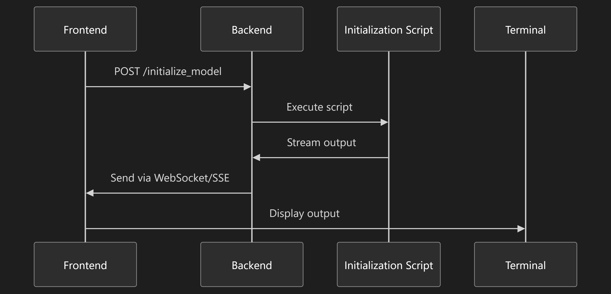
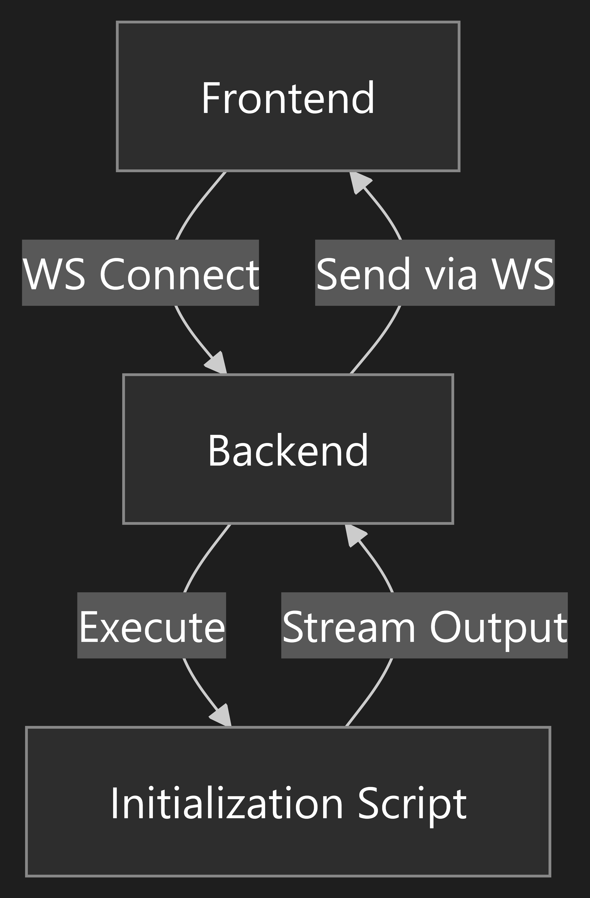
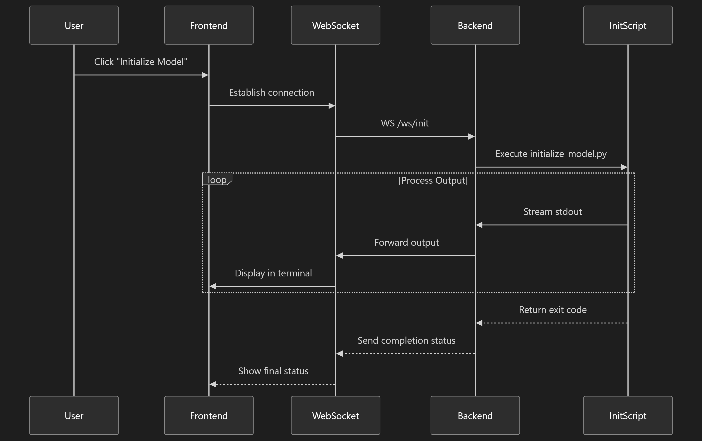
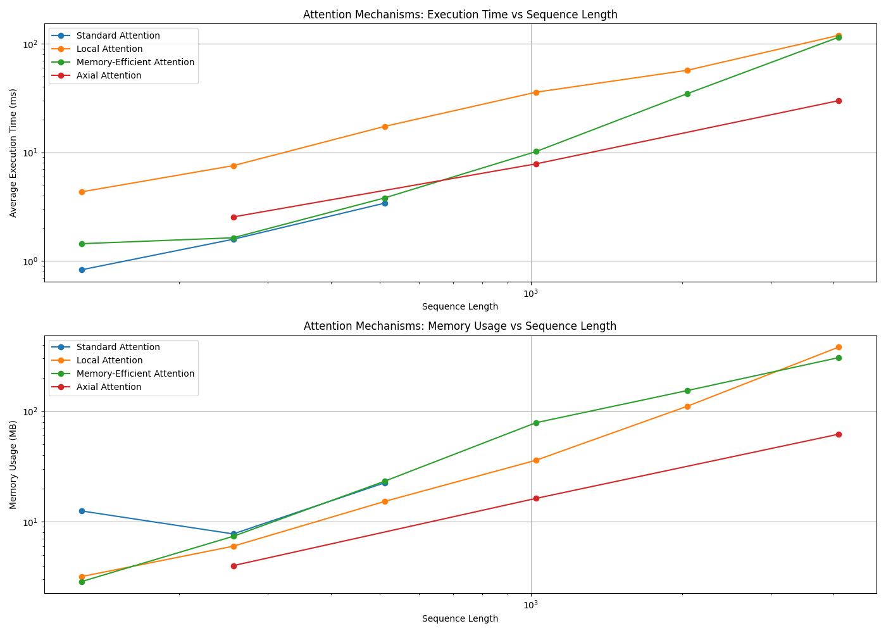
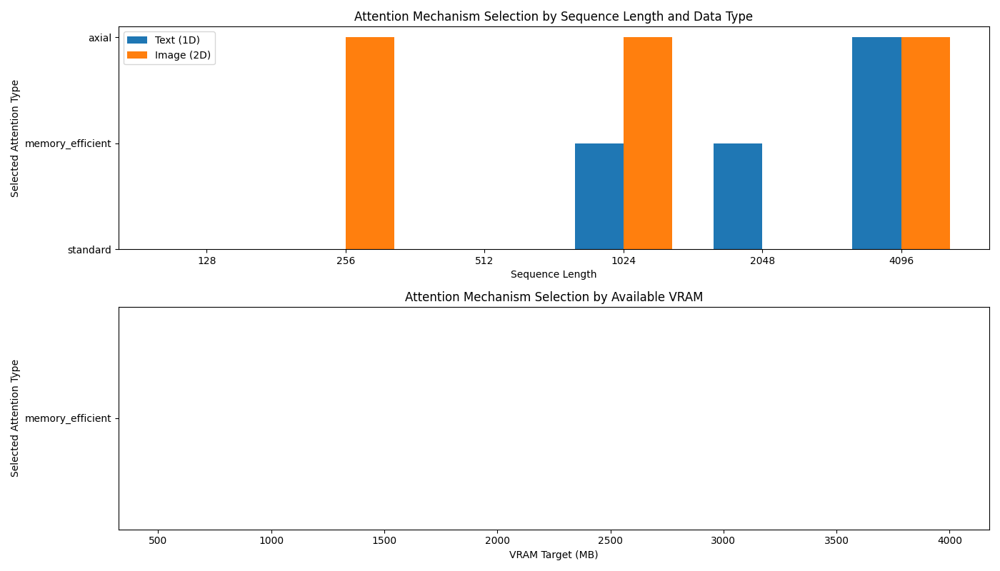
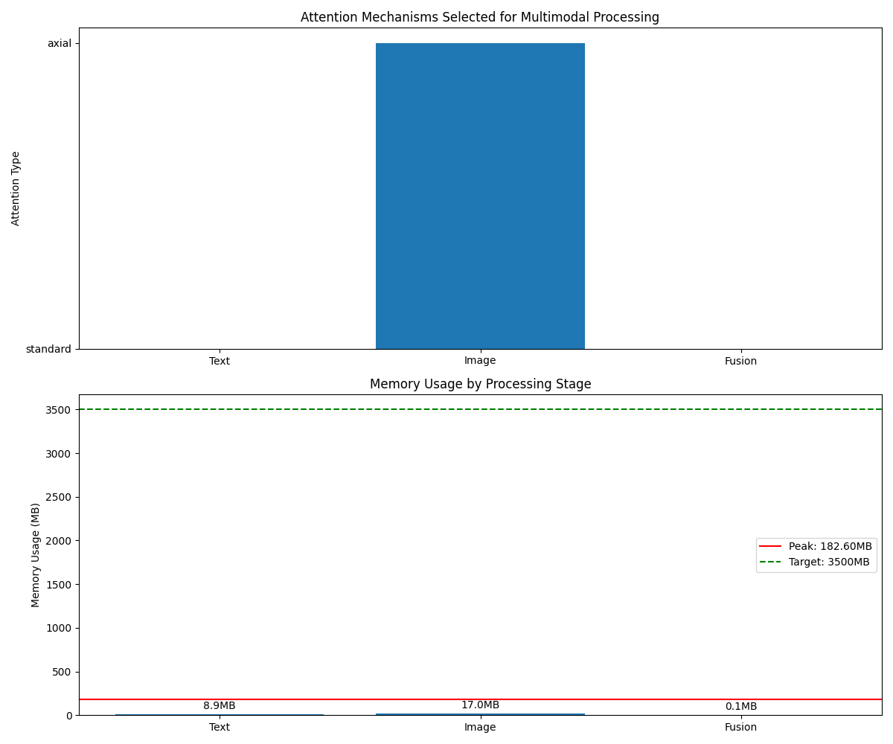

flowchart TD
A[User Browser] -->|HTTP/WS| B(Flask App)
B --> C[Blueprint: web]
B --> D[API Endpoints]
B --> E[WebSocket Handlers]
C --> F[Templates]
D --> G[Model Management]
D --> H[GPU/Memory Profiling]
D --> I[Tokenizer Training]
D --> J[Inference]
E --> K[Training Progress WS]
E --> L[Tokenizer Progress WS]
B --> M[Static Files]
B --> N[Session/Auth]
B --> O[Logging]
B --> P[Error Handlers]
B --> Q[Uploads]
B --> R[Model Cache]
B --> S[Config/Env Checks]
B --> T[Route Config]
B --> U[User Management]
B --> V[Settings]
B --> W[Walkthrough]
B --> X[Activity Log]
B --> Y[Dashboard]
B --> Z[Docs]
Figure 1: ImpressionCore Web Server High-Level Architecture (Mermaid) This interactive diagram shows the main components and data flow in the ImpressionCore web server. Click to magnify and explore the relationships between the user interface, Flask app, blueprints, API endpoints, WebSocket handlers, and supporting modules such as logging, session management, and configuration checks.
Routing & Blueprints
ImpressionCore uses Flask Blueprints for modular route management. The web blueprint encapsulates all user-facing routes, while API endpoints and WebSocket handlers are defined in the main server module.
from src.web.routes import web
app.register_blueprint(web)
Route Configuration
Blueprint routes: /data_prep, /evaluation, /inference, etc.
API endpoints: /api/check_gpu, /api/v1/model/create, /api/v1/tokenizer/start_training, etc.
Figure 2: Route Map (Mermaid) This diagram visualizes the main navigation and routing structure of the ImpressionCore web interface. Each node represents a major page or feature, and the arrows show navigation flow. Click to magnify for a detailed view of the route relationships.
API & Endpoints
Model Management:/api/v1/model/create, /api/v1/model/validate, /api/v1/model/memory_profile
sequenceDiagram
participant User
participant Browser
participant Flask
participant Model
User->>Browser: Request (e.g. Inference)
Browser->>Flask: HTTP POST /api/inference
Flask->>Model: Load & Run
Model-->>Flask: Output
Flask-->>Browser: JSON Response
Browser-->>User: Display Result
Figure 3: API Request Flow (Mermaid) This sequence diagram details the flow of an API request from the user through the browser, to the Flask backend, and back. It highlights the steps involved in model inference, including request handling, model execution, and response delivery. Click to magnify for a step-by-step breakdown.
System Images

Architecture Flow: This diagram illustrates the high-level flow of data and control in the ImpressionCore web server, showing how user requests are routed through the Flask app, blueprints, and supporting modules. It highlights the modular separation between user interface, API endpoints, and backend logic.

Architecture Validation: This image details the validation steps and checks performed by the system to ensure correct environment setup, dependency management, and runtime integrity before serving user requests.

Architectural Patterns: This diagram presents the architectural patterns used in ImpressionCore, such as blueprint modularity, separation of concerns, and extensibility for future features.

Attention Benchmark Results: This chart visualizes the performance of various attention mechanisms and their impact on model efficiency, memory usage, and inference speed.

Attention Integration Results: This image shows the integration results of advanced attention modules within the ImpressionCore architecture, highlighting improvements in accuracy and resource utilization.Solar System Knowledge Graph: This knowledge graph demonstrates the system's ability to represent and reason about complex, multimodal relationships, using the solar system as an example domain.Memory-Efficient Attention Plan: This diagram outlines the strategies for implementing memory-efficient attention mechanisms, focusing on the use of xFormers and related optimizations for low-VRAM hardware.

Multimodal Processing Results: This image presents the results of processing and integrating multiple data modalities (text, image, etc.) within the ImpressionCore framework, demonstrating the system's versatility.
Additional Mermaid Diagrams
graph LR
A[User] -->|Login| B[Flask Auth]
B -->|Session| C[Dashboard]
C --> D[Data Prep]
C --> E[Training]
C --> F[Evaluation]
C --> G[Inference]
C --> H[Monitoring]
C --> I[Settings]
C --> J[Docs]
Figure 4: User Flow (Mermaid) This diagram shows the typical user journey through the ImpressionCore web interface, from login to dashboard and through various features. Click to magnify for a clearer view of the user flow.
graph TD
subgraph Tokenizer Training
U1[Upload Data] --> U2[Start Training]
U2 --> U3[Progress WS]
U3 --> U4[Download Results]
end
subgraph Model Management
M1[Create Model] --> M2[Validate Model]
M2 --> M3[Memory Profile]
M3 --> M4[Architecture]
end
U4 --> M1
Figure 5: Tokenizer & Model Management Flow (Mermaid) This diagram illustrates the workflow for tokenizer training and model management, including data upload, training progress, validation, and architecture review. Click to magnify for a detailed breakdown of each step.
Usage & Running
Running the Server
python run_server.py
# or
python src/web/server.py
Environment & Requirements
Python 3.10+ (recommended: use a virtual environment)
.png)
{kind=link}